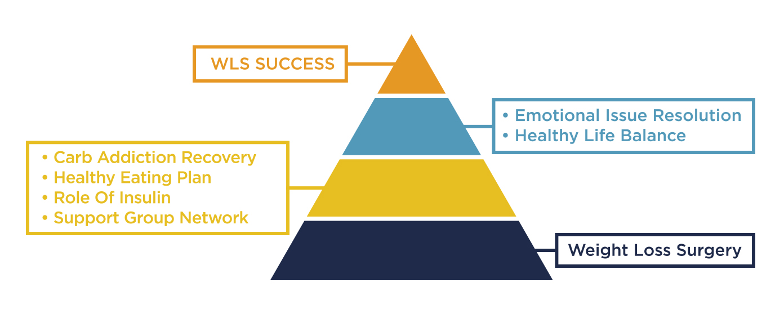

Why do some WLS patients succeed in losing weight while another portion regain an unacceptable amount? We believe that most patients aren’t being given all the building blocks they need for success. Plus, addicts very rarely quite cold turkey and never go back. A surgically shrunken stomach doesn’t teach people the lessons they need to make lasting and sustainable changes. That’s where we come in! We created the success pyramid to show that weight loss surgery is just the foundation on which to build a healthier lifestyle that can support you as you make changes. We believe that with all the building blocks we provide and a lot of hard work, any WLS patient can achieve success in their weight loss journeys.

Nobody gets to a state of needing WLS without a food addiction. Our society is deeply invested in telling fat people that they earned their status, just like thin people earn their thinness. While it’s true that individuals have a lot of power over their health, most people don’t know how deeply entrenched physical health is with mental health. Like drug addicts become physically dependent on their substance of choice, obese people become mentally dependent on the habits and patterns that lead them to obesity. A huge part of our program is teaching our clients how to identify triggers and prepare coping skills and responses to them. The vast majority of recovered drug addicts didn’t stop cold turkey and a process of success and relapse is to be expected in working with any population of addicts. We work with our clients to help them manage the powerful emotions associated with weight loss and gain that can sabotage their journeys towards WLS Success.
Why is a healthy lifestyle so easy for some people and so difficult for others?!
Part of a healthy life balance is about learning to put yourself first. It’s not about being selfish, it’s about taking the time and energy you need to make success easier. Only then can you live your best life and be of most use to your loved ones. If you’re taking care of everyone else or putting work before activities like planning your meals or cooking or exercise, you’re going to continue stopping for fast food or skipping the gym because there’s just no time for anything else. An integral part of WLS Success is admitting that we tried putting ourselves and our health last and it didn’t work to anyone’s benefit. It’s time to try putting our health first and seeing where that can take us!
You’ll work with our nutritionist to develop an eating plan that’s personal and achievable! Let’s stop making diet plans that look great on paper and terrible on a plate. Instead, let’s start making changes we can keep, even if we have to start small. Let’s identify triggers and come up with solutions now, before the pressure and the cravings can pressure us. And let’s start with food you actually like!
Being obese is exhausting. Your energy is stilted and halting on top of cravings that are so overpowering they seem impossible to ignore.
The ketogenic diet is essential for WLS patients who have regained. The benefit of this, what’s been called a “fad diet,” is its ability to stop cravings. Patients who have regained are highly susceptible to those cravings and are physically resistant to insulin, which is what allowed them to get to an unacceptable weight to begin with. The WLS Success Program uses the benefits of a ketogenic diet to support the specific, physiological problems that exist with WLS patients.
Part of success is unlearning old lessons we were all taught about obesity. Remember the pyramid you can’t use? The food pyramid. It’s the dietary guideline we were all given that suggested up to 4 servings of grains a day. Anyone who has ever eating four slices of bread a day can attest that it’s not a wise way to lose weight. We have to unlearn lessons about dietary fat being the cause of obesity (a finding that has been disproven) and replace it with understanding how obesity creates a hormonal imbalance that make the bodies of WLS patients particularly resistant to states that encourage weight loss. “Calories in vs calories out” is a concept that grossly oversimplifies the complicated processes that our body uses to store versus burn fat. We also use the new technology of the Dexa Scan to help our clients understand how their body is changing as they go through the WLS Success Program.
As well as the technical knowledge, a huge component of lasting WLS success is a community that supports patients making positive and lasting changes. Both food addiction and weight loss surgery are very unique experiences that our friends and family can’t always understand, despite having the best intentions. Research tells us that WLS patients involved in continuing dietary education and group therapy programs are much more likely to succeed.
Some patients can go from surgery right to success. We applaud them! But, we also know that WLS alone isn’t going to help a large proportion of its patients. We are confident that once they address all the elements of our program, any WLS patient will have what they need to succeed in their weight loss journey.